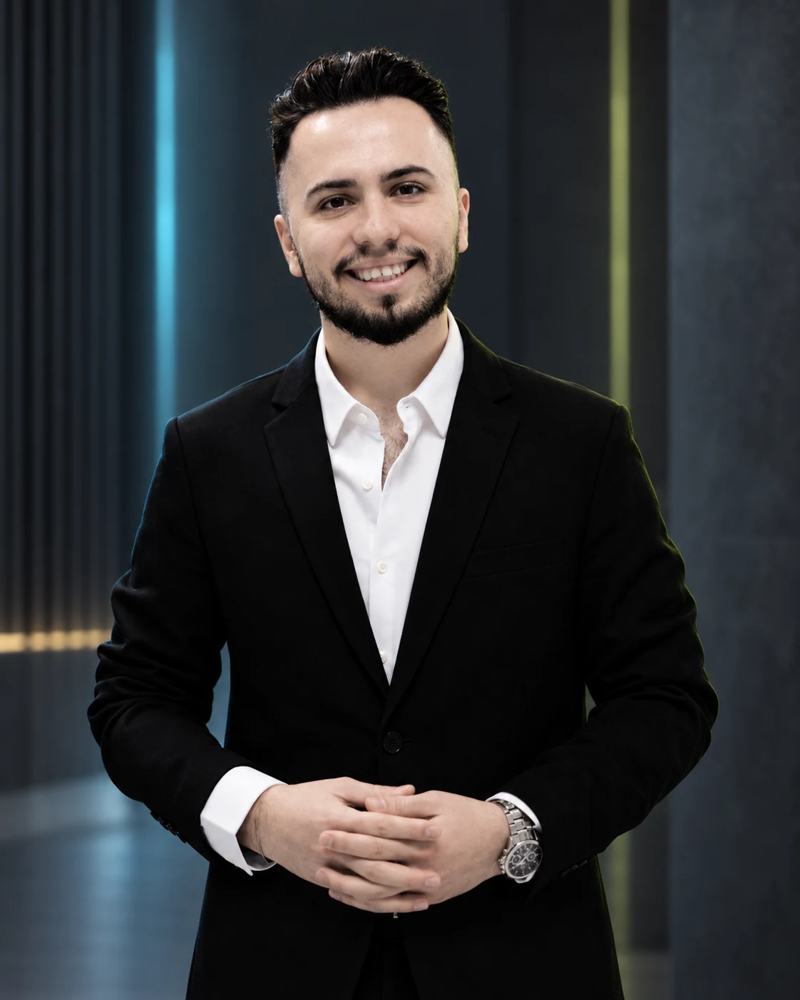

ОСНОВАТЕЛЬ / МЕЖДИСЦИПЛИНАРНЫЙ ИНЖЕНЕР
Ersan J.Tabrizi
Основатель · Инженер продуктов, ПО и инфраструктуры
Я превращаю операционные задачи в работающие системы: от электроники и физических устройств до программных платформ, сайтов, облачной инфраструктуры и надёжных процессов.
Работаю со Стамбулом, Тебризом и международными рынками.

ENGINEER
BUILDER
Избранные проекты
Создано для работы. Рассчитано на развитие.
Подборка продуктов и клиентских проектов Bizdavar Group.

FXGuard CRM
WhatsApp CRM для финансовых и обменных команд: диалоги, котировки, роли и филиалы.
Открыть кейс ↗ 01:29
01:29Marvi Society
iOS-приложение по приглашению, соединяющее проверенных авторов с площадками Стамбула.
Открыть кейс ↗ FZ-LLC · UAE
FZ-LLC · UAESupplify Trade
Многоязычная платформа снабженческой компании из ОАЭ: промышленные закупки, координация поставщиков и международная доставка.
Открыть кейс ↗


BIZDAVAR / 2013
Инженерный подход основателя.
Я работаю на стыке продуктовой стратегии, разработки, инфраструктуры и эксплуатации. Важен результат, которым люди могут пользоваться и который команда сможет развивать.
Обо мне